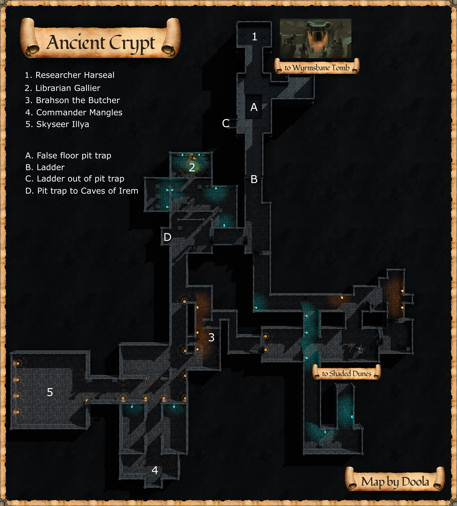
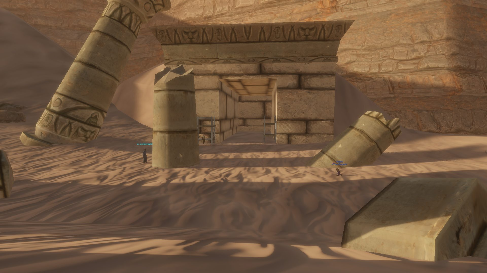

Ancient Crypt
Little is known of Ancient Crypt at this time. Zone respawn timer - 8 minutes.
Map


Map legend (from the wiki map box)
1. Researcher Harseal 2. Librarian Gallier 3. Brahson the Butcher 4. Commander Mangles 5. Skyseer Illya ___ A. False floor pit trap with skeletons B. Ladder up to Researcher Harseal area C. Recovery from 'A' pit trap D. False floor pit trap leading to Caves of Irem
Named mobs
| Named | Lvl | Race / class | Where | Known loot (hover) |
|---|---|---|---|---|
| A skeletal cleric wiki | 6 - 10 | Skeleton / Cleric | Scorched Academy Folio, Ancient Crypt, Scorched Academy Folio, Denizens of Wyrmsbane, Easthymn Freebooters | |
| Librarian Gallier wiki | 16 | Skeleton / Necromancer | Library / Research area: North Central part of zone | Robe of the Undying Scholar, Charred Transcripts, Medallion of the Ninth Flame |
| Researcher Harseal wiki | 16 | Skeleton / Wizard | - | Burnt Bone Chips, Seal's Favor, Heatshield Armguard |
| A ghoulish custodian wiki | 16 | Spider | Spawns in the library | Beholden Rites, Wondrous Summoning, Universal Magical Traversal, Mythical Gnomes |
| Brahson the Butcher wiki | ~17 | Ghoul | In the lower cooking area near Skyseer Illya | Brahson's Cleaver, Butcher's Cap |
| Commander Mangles wiki | ~19 | Skeleton / Warrior | Located at the southern end of Ancient Crypt close to Skyseer Illyas' room. | The Mangler, Commander's Cloak |
| Skyseer Illya wiki | 20 | Elemental / Elementalist | In the depths of Ancient crypts near Commander Mangles in a large square room. | Orb of the Fading Flame |
Mobs & NPCs (camps by level)
Rows with a level are huntable camps; rows without are usually town NPCs or not yet documented.
| Name | Lvl | Race | Class | Where | Notes |
|---|---|---|---|---|---|
| a skeletal guard wiki | ~12-15 | Skeleton | Fighter | - | |
| a charred acolyte wiki | 13 | Skeleton | - | Upstairs in the room directly before Librarian Gallier, spawns as part of the An enraged fire elemental encounter. | Ring Event Acolyte Mantle of Ashes , Acolyte Robe of Ashes , Scapular Acolyte Hood of Ashes |
| a skeletal adept wiki | ~13-14 | Skeleton | Necromancer | - | |
| an enthralled archaeologist wiki | 13 | Human | - | - | |
| a ghoulish scholar wiki | ~14-15 | Ghoul | Fighter | - | |
| a skeletal inquisitor wiki | ~14-15 | Skeleton | Inquisitor | - | |
| a skeletal researcher wiki | ~14-15 | Skeleton | Wizard | - | |
| an enraged fire elemental wiki | 15 | Elemental | - | Upstairs in the room directly before Librarian Gallier, spawns in the center of 3 runes. | Ring Event |
| a ghastly cook wiki | 16 | Ghoul | - | - | Bread Rolls |
| a skeletal porter wiki | 16 | Skeleton | - | - | |
| a skeletal acolyte wiki | 17 | Skeleton | Wizard | - | |
| a skeletal soldier wiki | 17 | Skeleton | - | - | |
| a fallen sergeant wiki | ~18-20 | Skeleton | - | - | PH |
| a fallen sentinel wiki | 19 | Skeleton | Cleric | - | |
| Ghoulish Librarian wiki | 25 | Ghoul | Wizard | Roaming through the whole dungeon | |
| a burning skeleton wiki | - | Skeleton | - | - | |
| a charred assistant wiki | - | Skeleton | - | - | PH |
| a decrepit ghoul wiki | - | Ghoul | - | - | |
| a fallen astromage wiki | - | Skeleton | Wizard | - | |
| a gelatinous cube wiki | - | Slime | - | - | |
| a skeletal provisioner | - | Skeleton | - | - | |
| a wild elemental wiki | - | Elemental | - | - |
Quests
| Quest | Reward | Giver | Min lvl |
|---|---|---|---|
| Example Quest Name | Example Reward | Example Quest Giver | - |
| Example Quest Name | Example Reward | Example Quest Giver | - |
Gear that drops here
| Slot | Item | Key stats (wiki) | How to get | Lvl | Classes |
|---|---|---|---|---|---|
| Bone Chips | no stats listed on wiki | Quest: Bone Chips for Moon Dances (Moon Dances, Faelindral, min lvl 1) Quest: Bone Chips for Squire Ryland (Squire Ryland, Night Harbor, min lvl 1) Quest: Druid Starter Quest (Faelindral) (Sylvarya Starveil, Faelindral, min lvl 1) Quest: Find Delilah's Pet (Delilah, Underdocks, min lvl 1) | 1 | NEC SHD | |
| Cloth Scraps | no stats listed on wiki | Quest: Cloth Scraps Quest (a shifty gnome, Night Harbor, min lvl 1) Drop: a decayed skeleton (lvl 2-3) — Ail'Vorith, - Drop: a Deepgulp berserker (lvl 12-13) — Ail'Vorith, - Drop: a Deepgulp hunter (lvl 10-11) — Ail'Vorith, - | 1 | class unconfirmed | |
| Primary, Secondary | Cracked Staff | DMG 6 / DLY 33 | Drop: a Deepgulp hunter (lvl 10-11) — Ail'Vorith, - Drop: a Deepgulp shaman (lvl unconfirmed) — Ail'Vorith Drop: a skeleton (lvl 6-7) — Ail'Vorith, - Drop: a charred acolyte (lvl 13) — Ancient Crypt, - | 1 | All classes |
| Primary, Secondary | Rusty Axe | DMG 6 / DLY 42 | Drop: A skeletal warrior (lvl 4 - 11) — Tomb of the Last Wyrmsbane, - Drop: A skeletal cleric (lvl -) — Tomb of the Last Wyrmsbane, - Drop: A skeletal fighter (lvl 3 - 10) — Tomb of the Last Wyrmsbane, - Drop: a skeletal priest (lvl -) — Tomb of the Last Wyrmsbane, - | 1 | BST FTR INQ PAL RNG SHD SPB |
| Primary | Rusty Battle Axe | DMG 10 / DLY 54 | Drop: A rotting skeleton (lvl 1) — Night Harbor, Noob Yard Drop: an ashira warrior (lvl -) — Night Harbor, Noob Yard Drop: A skeletal warrior (lvl 4 - 11) — Tomb of the Last Wyrmsbane, - Drop: a skeletal deacon (lvl -) — Tomb of the Last Wyrmsbane, - | 1 | BST FTR INQ PAL SHD |
| Primary, Secondary | Rusty Dagger | DMG 4 / DLY 24 | Vendor: A scrap dealer — Evershade Weald; A used weapons dealer — Night Harbor, Shallow Shoals; Evershade Weald Drop: an ashira warrior (lvl 6-7) — Sungreet Strand, - Drop: a Bloodynose quarreler (lvl ~8-10) — Sungreet Strand, Tel Ekir Goblin Entrance Drop: a sullen farmhand (lvl unconfirmed) — Sungreet Strand | 1 | ARC BRD BST ELE ENC FTR INQ NEC RNG ROG SHD SHM SPB WIZ |
| Primary | Rusty Great Scythe | DMG 8 / DLY 46 | Drop: A rotting skeleton (lvl 1) — Night Harbor, Noob Yard Drop: a market peddler (lvl unconfirmed) — Night Harbor Drop: A skeletal warrior (lvl 4 - 11) — Tomb of the Last Wyrmsbane, - Drop: a skeletal monk (lvl -) — Tomb of the Last Wyrmsbane, - | 1 | BST DRU FTR INQ NEC RNG SHD SPB |
| Primary, Secondary | Rusty Scimitar | DMG 5 / DLY 36 | Drop: A rotting skeleton (lvl 1) — Night Harbor, Noob Yard Drop: a goblin troublemaker (lvl 9) — Night Harbor, Docks Named drop: a stumbling zombie (lvl 8) — Shaded Dunes, West end of Shaded Dunes Drop: a skeleton (lvl 4-6) — Shaded Dunes | 1 | ARC BRD BST DRU FTR INQ PAL RNG ROG SHD SPB WIZ |
| Primary, Secondary | Rusty Mace | DMG 6 / DLY 40 | Vendor: A scrap dealer — Evershade Weald; A used weapons dealer — Night Harbor, Shallow Shoals; Evershade Weald Drop: an ashira lookout (lvl -) — Sungreet Strand, - Drop: an ashira shaman (lvl -) — Sungreet Strand, - Drop: a Bloodynose quarreler (lvl ~8-10) — Sungreet Strand, Tel Ekir Goblin Entrance | 1 | BRD BST CLR DRU FTR INQ MNK PAL RNG ROG SHD SHM SPB |
| Primary | Rusty Maul | DMG 10 / DLY 52 | Drop: A skeletal cavalier (lvl 6 - 10) — Tomb of the Last Wyrmsbane, - Drop: A skeletal fighter (lvl 3 - 10) — Tomb of the Last Wyrmsbane, - Drop: a skeletal deacon (lvl -) — Tomb of the Last Wyrmsbane, - Drop: a skeletal warrior (lvl 4 - 11) — Tomb of the Last Wyrmsbane, - | 1 | BRD BST CLR DRU FTR INQ MNK PAL RNG ROG SHD SHM SPB |
| Primary, Secondary | Rusty Scythe | DMG 4 / DLY 28 | Drop: a skeleton (lvl 4-6) — Shaded Dunes Drop: a bandit (lvl 10-13) — Shaded Dunes, - Drop: an ashira warrior (lvl -) — Shaded Dunes, - Named drop: a wererat (lvl unconfirmed) — Shaded Dunes, They spawn at night in the smugglers camp, in place of the smugglers. | 1 | BST DRU FTR INQ NEC RNG SHD SPB |
| Primary, Secondary | Rusty Spear | DMG 5 / DLY 34 | Vendor: A scrap dealer — Evershade Weald; Evershade Weald; a scrap dealer Drop: an ashira warrior (lvl 6-7) — Sungreet Strand, - Drop: an ashira lookout (lvl -) — Sungreet Strand, - Named drop: a rotting skeleton (lvl 1) — Sungreet Strand, Spawns along road in newbie area. | 1 | ARC BRD BST FTR INQ RNG ROG SHD SHM |
| Secondary | Rusty Kite Shield | AC 3 | Drop: a skeletal researcher (lvl ~14-15) — Ancient Crypt, - Drop: a skeletal guard (lvl ~12-15) — Ancient Crypt, - Drop: a ghoulish scholar (lvl ~14-15) — Ancient Crypt, - Drop: a Fellstone defiler (lvl unconfirmed) — Blacktide Bay | 1 | BRD CLR FTR INQ PAL RNG SHD |
| Primary | Rusty Long Spear | DMG 9 / DLY 48 | Drop: an ashira warrior (lvl 6-7) — Sungreet Strand, - Drop: a Bloodynose quarreler (lvl ~8-10) — Sungreet Strand, Tel Ekir Goblin Entrance Drop: an ashira lookout (lvl -) — Sungreet Strand, - Drop: an ashira shaman (lvl -) — Sungreet Strand, - | 1 | ARC BRD BST FTR INQ RNG ROG SHD SHM |
| Primary, Secondary | Rusty Longsword | DMG 6 / DLY 38 | Drop: an ashira shaman (lvl -) — Sungreet Strand, - Drop: an ashira warrior (lvl 6-7) — Sungreet Strand, - Drop: a Bloodynose quarreler (lvl ~8-10) — Sungreet Strand, Tel Ekir Goblin Entrance Drop: an ashira lookout (lvl -) — Sungreet Strand, - | 1 | ARC BRD BST FTR INQ PAL RNG ROG SHD SPB WIZ |
| Primary, Secondary | Rusty Shortsword | DMG 4 / DLY 26 | Vendor: A scrap dealer — Evershade Weald; A used weapons dealer — Night Harbor, Shallow Shoals; Evershade Weald Drop: an ashira warrior (lvl 6-7) — Sungreet Strand, - Drop: an ashira lookout (lvl -) — Sungreet Strand, - Drop: a hired thug (lvl 9-10) — Sungreet Strand, Ameen Farm | 1 | ARC BRD BST FTR INQ PAL RNG ROG SHD SHM SPB WIZ |
| Primary, Secondary | Rusty Warhammer | DMG 4 / DLY 30 | Drop: A skeletal fighter (lvl 3 - 10) — Tomb of the Last Wyrmsbane, - Drop: A skeletal marksman (lvl -) — Tomb of the Last Wyrmsbane, - Drop: a skeletal warrior (lvl 4 - 11) — Tomb of the Last Wyrmsbane, - Drop: a skeletal monk (lvl -) — Tomb of the Last Wyrmsbane, - | 1 | BRD BST CLR DRU FTR INQ MNK PAL RNG ROG SHD SHM SPB |
| Neck | Tattered Cloth Gorget | AC 1 | Drop: A rotting skeleton (lvl 1) — Night Harbor, Noob Yard Drop: a goblin drunk (lvl -) — Night Harbor, Docks Drop: a goblin troublemaker (lvl 9) — Night Harbor, Docks Drop: a goblin squatter (lvl 10) — Night Harbor, Docks | 1 | All classes |
| Hands | Tattered Cloth Gloves | AC 1 | Drop: A rotting skeleton (lvl 1) — Night Harbor, Noob Yard Drop: a begrudging farmer (lvl unconfirmed) — Night Harbor Drop: a stumbling skeleton (lvl 14) — Night Harbor, Crypt (Night) Drop: a goblin drunk (lvl -) — Night Harbor, Docks | 1 | All classes |
| Waist | Tattered Cloth Belt | AC 1 | Drop: A rotting skeleton (lvl 1) — Night Harbor, Noob Yard Drop: a cackling skeleton (lvl 15) — Night Harbor, Crypt (Night) Drop: a goblin troublemaker (lvl 9) — Night Harbor, Docks Drop: an ashira scout (lvl 2) — Night Harbor, Noob Yard | 1 | All classes |
| Shoulders | Tattered Cloth Mantle | AC 1 | Drop: A skeletal fighter (lvl 3 - 10) — Tomb of the Last Wyrmsbane, - Drop: A skeletal monk (lvl -) — Tomb of the Last Wyrmsbane, - Drop: A skeletal warrior (lvl 4 - 11) — Tomb of the Last Wyrmsbane, - Drop: A skeletal defender (lvl -) — Tomb of the Last Wyrmsbane, - | 1 | All classes |
| Legs | Tattered Cloth Pantaloons | AC 1 | Drop: a decayed skeleton (lvl 2-3) — Ail'Vorith, - Drop: a ghoulish scholar (lvl ~14-15) — Ancient Crypt, - Drop: a skeletal adept (lvl ~13-14) — Ancient Crypt, - Drop: a skeletal guard (lvl ~12-15) — Ancient Crypt, - | 1 | All classes |
| Feet | Tattered Cloth Boots | AC 1 | Drop: A rotting skeleton (lvl 1) — Night Harbor, Noob Yard Drop: an ashira scout (lvl 2) — Night Harbor, Noob Yard Drop: a goblin drunk (lvl -) — Night Harbor, Docks Drop: a goblin squatter (lvl 10) — Night Harbor, Docks | 1 | All classes |
| Chest | Tattered Cloth Robe | AC 2 | Drop: A rotting skeleton (lvl 1) — Night Harbor, Noob Yard Drop: a cackling skeleton (lvl 15) — Night Harbor, Crypt (Night) Drop: a goblin squatter (lvl 10) — Night Harbor, Docks Drop: a goblin gambler (lvl -) — Night Harbor, Docks | 1 | ELE ENC NEC WIZ |
| Back | Tattered Cloth Cape | AC 1 | Drop: A rotting skeleton (lvl 1) — Night Harbor, Noob Yard Drop: a risen skeleton (lvl 13) — Night Harbor, Crypt (Night) Drop: a cackling skeleton (lvl 15) — Night Harbor, Crypt (Night) Drop: a goblin drunk (lvl -) — Night Harbor, Docks | 1 | All classes |
| Wrist | Tattered Cloth Bracer | AC 1 | Drop: A skeletal fighter (lvl 3 - 10) — Tomb of the Last Wyrmsbane, - Drop: A skeletal warrior (lvl 4 - 11) — Tomb of the Last Wyrmsbane, - Drop: A skeletal cleric (lvl -) — Tomb of the Last Wyrmsbane, - Drop: A skeletal knight (lvl -) — Tomb of the Last Wyrmsbane, - | 1 | All classes |
| Head | Tattered Cloth Cap | AC 1 | Drop: A rotting skeleton (lvl 1) — Night Harbor, Noob Yard Drop: a goblin squatter (lvl 10) — Night Harbor, Docks Drop: a goblin troublemaker (lvl 9) — Night Harbor, Docks Drop: a goblin drunk (lvl -) — Night Harbor, Docks | 1 | All classes |
| Face | Tattered Cloth Veil | AC 1 | Drop: A rotting skeleton (lvl 1) — Night Harbor, Noob Yard Drop: a cackling skeleton (lvl 15) — Night Harbor, Crypt (Night) Drop: a goblin drunk (lvl -) — Night Harbor, Docks Drop: a goblin squatter (lvl 10) — Night Harbor, Docks | 1 | All classes |
| Chest | Tattered Cloth Tunic | AC 2 | Drop: A skeletal cleric (lvl -) — Tomb of the Last Wyrmsbane, - Drop: A skeletal fighter (lvl 3 - 10) — Tomb of the Last Wyrmsbane, - Drop: A skeletal warrior (lvl 4 - 11) — Tomb of the Last Wyrmsbane, - Drop: A skeletal priest (lvl -) — Tomb of the Last Wyrmsbane, - | 1 | All classes |
| Shirt | Tattered Cloth Shirt | no stats listed on wiki | Drop: A rotting skeleton (lvl 1) — Night Harbor, Noob Yard Drop: a stumbling skeleton (lvl 14) — Night Harbor, Crypt (Night) Drop: a cackling skeleton (lvl 15) — Night Harbor, Crypt (Night) Drop: a goblin troublemaker (lvl 9) — Night Harbor, Docks | 1 | All classes |
| Primary, Secondary | Torch | Effect: Torch (Passive. Must Equip. Level: 1) | Quest: Pests at the Farm (Farmer Ammar, Night Harbor, min lvl 1) Vendor: A goods merchant — Night Harbor, Shallow Shoals; A greedy halfling — Night Harbor; A shifty elf — Evershade Weald Crafted: Survival (trivial X) Drop: A rotting skeleton (lvl 1) — Night Harbor, Noob Yard | 1 | All classes |
| Water Flask | no stats listed on wiki | Quest: Night Harbor Quest: Pests at the Farm (Farmer Ammar, Night Harbor, min lvl 1) Vendor: A baker (Shortfolk Area) — Night Harbor; A barkeep — Night Harbor; A merchant traveler — Vale of Zintar Drop: a ghastly cook (lvl 16) — Ancient Crypt, - | 1 | class unconfirmed | |
| Secondary | Worn Buckler | AC 2 | Drop: an ashira shaman (lvl -) — Sungreet Strand, - Drop: an ashira lookout (lvl -) — Sungreet Strand, - Drop: an ashira warrior (lvl 6-7) — Sungreet Strand, - Drop: a Bloodynose scarer (lvl ~8-10) — Sungreet Strand, Tel Ekir Goblin Entrance | 1 | BRD BST CLR DRU FTR INQ PAL RNG ROG SHD SHM SPB |
| Primary | Worn Great Staff | DMG 10 / DLY 39 | Drop: a decayed skeleton (lvl 2-3) — Ail'Vorith, - Drop: a decrepit ghoul (lvl -) — Ancient Crypt, - Drop: a skeletal guard (lvl ~12-15) — Ancient Crypt, - Drop: a Fellstone guard (lvl unconfirmed) — Blacktide Bay | 1 | BST CLR DRU ELE ENC FTR MNK NEC PAL SHM SPB WIZ |
| Rawhide Scraps | no stats listed on wiki | Drop: a Deepgulp berserker (lvl 12-13) — Ail'Vorith, - Drop: a Deepgulp hunter (lvl 10-11) — Ail'Vorith, - Drop: a Deepgulp mystic (lvl 12-13) — Ail'Vorith, - Drop: a Deepgulp scavenger (lvl 10-11) — Ail'Vorith, - | 3 | class unconfirmed | |
| Waist | Tattered Rawhide Belt | AC 1 | Drop: A skeletal warrior (lvl 4 - 11) — Tomb of the Last Wyrmsbane, - Drop: A skeletal monk (lvl -) — Tomb of the Last Wyrmsbane, - Drop: a skeletal cleric (lvl -) — Tomb of the Last Wyrmsbane, - Drop: a risen zombie (lvl -) — Tomb of the Last Wyrmsbane, - | 3 | ARC BRD BST CLR DRU FTR INQ MNK PAL RNG ROG SHD SHM SPB |
| Back | Tattered Rawhide Cloak | AC 1 | Drop: A skeletal marksman (lvl -) — Tomb of the Last Wyrmsbane, - Drop: A skeletal warrior (lvl 4 - 11) — Tomb of the Last Wyrmsbane, - Drop: A skeletal cavalier (lvl 6 - 10) — Tomb of the Last Wyrmsbane, - Drop: A skeletal cleric (lvl -) — Tomb of the Last Wyrmsbane, - | 3 | ARC BRD BST CLR DRU FTR INQ MNK PAL RNG ROG SHD SHM SPB |
| Chest | Tattered Rawhide Tunic | AC 3 | Drop: a charred acolyte (lvl 13) — Ancient Crypt, - Named drop: a ghoulish custodian (lvl 16) — Ancient Crypt, Spawns in the library Drop: a skeletal guard (lvl ~12-15) — Ancient Crypt, - Drop: a skeletal researcher (lvl ~14-15) — Ancient Crypt, - | 3 | ARC BRD BST CLR DRU FTR INQ MNK PAL RNG ROG SHD SHM SPB |
| Legs | Tattered Rawhide Leggings | AC 2 | Drop: a Deepgulp hunter (lvl 10-11) — Ail'Vorith, - Drop: a Deepgulp warrior (lvl 10-11) — Ail'Vorith, - Drop: a skeletal guard (lvl ~12-15) — Ancient Crypt, - Drop: a Fellstone sentinel (lvl unconfirmed) — Blacktide Bay | 3 | ARC BRD BST CLR DRU FTR INQ MNK PAL RNG ROG SHD SHM SPB |
| Wrist | Tattered Rawhide Bracer | AC 2 | Drop: A skeletal warrior (lvl 4 - 11) — Tomb of the Last Wyrmsbane, - Drop: A skeletal defender (lvl -) — Tomb of the Last Wyrmsbane, - Drop: A skeletal marksman (lvl -) — Tomb of the Last Wyrmsbane, - Drop: a skeletal priest (lvl -) — Tomb of the Last Wyrmsbane, - | 4 | ARC BRD BST CLR DRU FTR INQ MNK PAL RNG ROG SHD SHM SPB |
| Neck | Tattered Rawhide Gorget | AC 1 | Drop: a skeleton (lvl 4-6) — Sungreet Strand Drop: an ashira warrior (lvl 6-7) — Sungreet Strand, - Drop: a Bloodynose quarreler (lvl ~8-10) — Sungreet Strand, Tel Ekir Goblin Entrance Drop: a hired thug (lvl 9-10) — Sungreet Strand, Ameen Farm | 4 | ARC BRD BST CLR DRU FTR INQ MNK PAL RNG ROG SHD SHM SPB |
| Feet | Tattered Rawhide Boots | AC 2 | Drop: A skeletal warrior (lvl 4 - 11) — Tomb of the Last Wyrmsbane, - Drop: A skeletal cleric (lvl -) — Tomb of the Last Wyrmsbane, - Drop: A skeletal archer (lvl -) — Tomb of the Last Wyrmsbane, - Drop: A skeletal cavalier (lvl 6 - 10) — Tomb of the Last Wyrmsbane, - | 4 | ARC BRD BST CLR DRU FTR INQ MNK PAL RNG ROG SHD SHM SPB |
| Shoulders | Tattered Rawhide Shoulderpads | AC 2 | Drop: A skeletal warrior (lvl 4 - 11) — Tomb of the Last Wyrmsbane, - Drop: A risen zombie (lvl -) — Tomb of the Last Wyrmsbane, - Drop: A skeletal marksman (lvl -) — Tomb of the Last Wyrmsbane, - Drop: A skeletal priest (lvl -) — Tomb of the Last Wyrmsbane, - | 4 | ARC BRD BST CLR DRU FTR INQ MNK PAL RNG ROG SHD SHM SPB |
| Face | Tattered Rawhide Mask | AC 1 | Drop: a Deepgulp warrior (lvl 10-11) — Ail'Vorith, - Named drop: a ghoulish custodian (lvl 16) — Ancient Crypt, Spawns in the library Drop: a ghoulish scholar (lvl ~14-15) — Ancient Crypt, - Drop: a skeletal guard (lvl ~12-15) — Ancient Crypt, - | 4 | ARC BRD BST CLR DRU FTR INQ MNK PAL RNG ROG SHD SHM SPB |
| Hands | Tattered Rawhide Gloves | AC 2 | Drop: A skeletal warrior (lvl 4 - 11) — Tomb of the Last Wyrmsbane, - Drop: A skeletal priest (lvl -) — Tomb of the Last Wyrmsbane, - Drop: A skeletal marksman (lvl -) — Tomb of the Last Wyrmsbane, - Drop: a skeletal monk (lvl -) — Tomb of the Last Wyrmsbane, - | 4 | ARC BRD BST CLR DRU FTR INQ MNK PAL RNG ROG SHD SHM SPB |
| Head | Tattered Rawhide Cap | AC 2 | Drop: A skeletal warrior (lvl 4 - 11) — Tomb of the Last Wyrmsbane, - Drop: A skeletal marksman (lvl -) — Tomb of the Last Wyrmsbane, - Drop: a skeletal knight (lvl -) — Tomb of the Last Wyrmsbane, - Drop: a risen zombie (lvl -) — Tomb of the Last Wyrmsbane, - | 4 | ARC BRD BST CLR DRU FTR INQ MNK PAL RNG ROG SHD SHM SPB |
| Shirt | Tattered Rawhide Vest | no stats listed on wiki | Drop: A skeletal warrior (lvl 4 - 11) — Tomb of the Last Wyrmsbane, - Drop: A skeletal knight (lvl -) — Tomb of the Last Wyrmsbane, - Drop: a skeletal priest (lvl -) — Tomb of the Last Wyrmsbane, - Drop: a skeletal defender (lvl -) — Tomb of the Last Wyrmsbane, - | 4 | ARC BRD BST CLR DRU FTR INQ MNK PAL RNG ROG SHD SHM SPB |
| Bronze Scraps | no stats listed on wiki | Crafted: Smelting (trivial ??) Drop: A dusty skeleton (lvl -) — Fallen Pass, - Drop: Mirrielle Bromm (lvl unconfirmed) — Fallen Pass Drop: a restless skeleton (lvl 18-21) — Fallen Pass, - | 6 | class unconfirmed | |
| Waist | Corroded Bronze Chain Waistguard | AC 3 | Drop: a Sangrel striker (lvl 18-22) — Keeper's Bight, - Drop: a Sangrel shadowblade (lvl 18-22) — Keeper's Bight, - Drop: a poacher pathfinder (lvl 28-30) — Keeper's Bight, Poacher Camp, Bear Cave Drop: an ancient elven fighter (lvl -) — Keeper's Bight, - | 6 | BRD CLR FTR INQ PAL RNG ROG SHD SHM |
| Primary | Corroded Bronze Great Scythe | DMG 12 / DLY 46 | Drop: a skeletal soldier (lvl 17) — Ancient Crypt, - Drop: a skeletal acolyte (lvl 17) — Ancient Crypt, - Drop: a ghastly cook (lvl 16) — Ancient Crypt, - Drop: a cultist (lvl -) — Shaded Dunes, Ancient Crypt Entrance | 6 | BST DRU FTR INQ NEC RNG SHD SPB |
| Primary, Secondary | Corroded Bronze Dagger | DMG 5 / DLY 24 | Drop: an ashira ain guard (lvl -) — Tel Ekir, - Drop: an ashira naturalist (lvl -) — Tel Ekir, - Drop: a skeletal acolyte (lvl 17) — Ancient Crypt, - Drop: a skeletal soldier (lvl 17) — Ancient Crypt, - | 6 | ARC BRD BST ELE ENC FTR NEC RNG ROG SHD SHM SPB WIZ |
| Primary, Secondary | Corroded Bronze Axe | DMG 9 / DLY 42 | Drop: a bulky bandit (lvl 26) — Scarwood, - Drop: a risen commander (lvl -) — Shaded Dunes, Ancient Crypt Entrance Drop: an ashira warrior (lvl 6-7) — Sungreet Strand, - Drop: an ashira preserver (lvl -) — Sungreet Strand, - | 6 | BST FTR INQ PAL RNG SHD SPB |
| Primary | Corroded Bronze Battle Axe | DMG 14 / DLY 54 | Drop: an ashira huntmaster (lvl 16-18) — Tel Ekir, - Drop: an ashira ain guard (lvl -) — Tel Ekir, - Drop: a Bloodynose spooker (lvl ~13-14) — Tel Ekir, - Drop: a skeletal acolyte (lvl 17) — Ancient Crypt, - | 6 | BST FTR INQ PAL SHD |
| Feet | Corroded Bronze Chain Boots | AC 5 | Drop: an ashira mystic (lvl -) — Tel Ekir, - Drop: a Bloodynose sergeant (lvl 15) — Tel Ekir, - Drop: a Bloodchain guard (lvl unconfirmed) — Blacktide Bay Drop: a skeletal guard (lvl ~12-15) — Ancient Crypt, - | 6 | BRD CLR FTR INQ PAL RNG ROG SHD SHM |
| Shirt | Corroded Bronze Plate Arming Doublet | no stats listed on wiki | Drop: a skeletal soldier (lvl 17) — Ancient Crypt, - Drop: a skeletal guard (lvl ~12-15) — Ancient Crypt, - Drop: a Muggrah brawler (lvl 20+) — Sungreet Strand, Muggrah Mountain Camp Drop: an ashira warrior (lvl 6-7) — Sungreet Strand, - | 6 | CLR FTR INQ PAL SHD |
| Hands | Corroded Bronze Chain Gloves | AC 7 | Drop: an ashira ain guard (lvl -) — Tel Ekir, - Drop: a fallen sentinel (lvl 19) — Ancient Crypt, - Drop: an ashira warrior (lvl 6-7) — Sungreet Strand, - Drop: an ashira luminary (lvl unconfirmed) — Sungreet Strand | 6 | BRD CLR FTR INQ PAL RNG ROG SHD SHM |
| Shoulders | Corroded Bronze Chain Shoulderguards | AC 8 | Drop: a Sangrel striker (lvl 18-22) — Keeper's Bight, - Drop: a poacher pathfinder (lvl 28-30) — Keeper's Bight, Poacher Camp, Bear Cave Drop: a Sangrel hunter (lvl 18-22) — Keeper's Bight, - Drop: a Blacktide brute (lvl 25) — Keeper's Bight, - | 6 | BRD CLR FTR INQ PAL RNG ROG SHD SHM |
| Chest | Corroded Bronze Chain Tunic | AC 9 | Drop: an ashira ain guard (lvl -) — Tel Ekir, - Drop: a Bloodynose witch doctor (lvl 15) — Tel Ekir, - Drop: a skeletal soldier (lvl 17) — Ancient Crypt, - Drop: a dusty skeleton (lvl -) — Fallen Pass, - | 6 | BRD CLR FTR INQ PAL RNG ROG SHD SHM |
| Secondary | Corroded Bronze Kite Shield | AC 8 | Drop: a Sangrel striker (lvl 18-22) — Keeper's Bight, - Drop: a mercenary magus (lvl unconfirmed) — Keeper's Bight Drop: a poacher pathfinder (lvl 28-30) — Keeper's Bight, Poacher Camp, Bear Cave Drop: a Bloodynose frightener (lvl ~15-18) — Tel Ekir, - | 6 | BRD FTR INQ PAL RNG SHD |
| Primary | Corroded Bronze Long Spear | DMG 12 / DLY 48 | Drop: an ashira alpha (lvl ~14) — Tel Ekir, - Drop: a Bloodynose frightener (lvl ~15-18) — Tel Ekir, - Drop: a Bloodynose witch doctor (lvl 15) — Tel Ekir, - Drop: a restless skeleton (lvl 18-21) — Fallen Pass, - | 6 | ARC BRD BST FTR INQ RNG ROG SHD SHM |
| Legs | Corroded Bronze Chain Leggings | AC 8 | Drop: an ashira ain guard (lvl -) — Tel Ekir, - Drop: a Bloodynose captain (lvl 16) — Tel Ekir, - Drop: a Bloodynose schemer (lvl 13-15) — Tel Ekir, Spawns in the southeast corner of the Bloodynose hag room/camp by a firepit. Drop: a trail bandit (lvl 26) — Scarwood, - | 6 | BRD CLR FTR INQ PAL RNG ROG SHD SHM |
| Primary, Secondary | Corroded Bronze Scimitar | DMG 7 / DLY 36 | Drop: an ashira ain guard (lvl -) — Tel Ekir, - Drop: an ashira naturalist (lvl -) — Tel Ekir, - Drop: a Bloodynose witch doctor (lvl 15) — Tel Ekir, - Drop: a Bloodynose frightener (lvl ~15-18) — Tel Ekir, - | 6 | ARC BRD BST DRU FTR INQ PAL RNG ROG SHD SPB WIZ |
| Face | Corroded Bronze Plate Visor | AC 4 | Drop: a skeletal soldier (lvl 17) — Ancient Crypt, - Drop: a skeletal guard (lvl ~12-15) — Ancient Crypt, - Drop: an ashira elite guard (lvl ~27) — Tel Ekir, - Drop: a Muggrah scrapper (lvl 17+) — Sungreet Strand, Muggrah Mountain Camp | 6 | CLR FTR INQ PAL SHD |
| Head | Corroded Bronze Plate Helm | AC 9 | Drop: a bulky bandit (lvl 26) — Scarwood, - Drop: a ghastly cook (lvl 16) — Ancient Crypt, - Drop: a restless skeleton (lvl 18-21) — Fallen Pass, - Drop: a dusty skeleton (lvl -) — Fallen Pass, - | 6 | CLR FTR INQ PAL SHD |
| Shoulders | Corroded Bronze Plate Pauldrons | AC 10 | Drop: an ashira warrior (lvl 6-7) — Sungreet Strand, - Drop: a Muggrah scrapper (lvl 17+) — Sungreet Strand, Muggrah Mountain Camp Drop: a gruff farmhand (lvl unconfirmed) — Sungreet Strand Drop: a bodyguard (lvl unconfirmed) — Sungreet Strand | 6 | CLR FTR INQ PAL SHD |
| Back | Corroded Bronze Plate Cloak | AC 4 | Drop: a skeletal soldier (lvl 17) — Ancient Crypt, - Drop: a fallen sergeant (lvl ~18-20) — Ancient Crypt, - Drop: an ashira warrior (lvl 6-7) — Sungreet Strand, - Drop: a Muggrah scrapper (lvl 17+) — Sungreet Strand, Muggrah Mountain Camp | 6 | CLR FTR INQ PAL SHD |
| Feet | Corroded Bronze Plate Boots | AC 6 | Drop: an ashira ain guard (lvl -) — Tel Ekir, - Drop: a fallen sentinel (lvl 19) — Ancient Crypt, - Drop: a skeletal soldier (lvl 17) — Ancient Crypt, - Drop: a fallen sergeant (lvl ~18-20) — Ancient Crypt, - | 6 | CLR FTR INQ PAL SHD |
| Hands | Corroded Bronze Plate Gauntlets | AC 8 | Drop: an ashira ain guard (lvl -) — Tel Ekir, - Drop: a stumbling skeleton (lvl 14) — Night Harbor, Crypt (Night) Named drop: a river pirate (lvl 19) — Night Harbor Drop: a mercenary (lvl unconfirmed) — Night Harbor | 6 | CLR FTR INQ PAL SHD |
| Chest | Corroded Bronze Plate Breastplate | AC 11 | Drop: a Sangrel striker (lvl 18-22) — Keeper's Bight, - Drop: a Blacktide raider (lvl 23-24) — Keeper's Bight, - Drop: a Muggrah brawler (lvl 20+) — Sungreet Strand, Muggrah Mountain Camp Drop: an ashira warrior (lvl 6-7) — Sungreet Strand, - | 6 | CLR FTR INQ PAL SHD |
| Primary, Secondary | Corroded Bronze Scythe | DMG 6 / DLY 28 | Drop: a skeletal soldier (lvl 17) — Ancient Crypt, - Drop: a fallen sentinel (lvl 19) — Ancient Crypt, - Drop: a Muggrah brawler (lvl 20+) — Sungreet Strand, Muggrah Mountain Camp Drop: an ashira warrior (lvl 6-7) — Sungreet Strand, - | 6 | BST DRU FTR INQ NEC RNG SHD SPB |
| Primary, Secondary | Corroded Bronze Warhammer | DMG 6 / DLY 30 | Drop: a Sangrel shadowblade (lvl 18-22) — Keeper's Bight, - Drop: a poacher pathfinder (lvl 28-30) — Keeper's Bight, Poacher Camp, Bear Cave Drop: a Blacktide raider (lvl 23-24) — Keeper's Bight, - Drop: a Sangrel striker (lvl 18-22) — Keeper's Bight, - | 6 | BRD BST CLR DRU FTR INQ MNK PAL RNG ROG SHD SHM SPB |
| Primary, Secondary | Corroded Bronze Trident | DMG 7 / DLY 32 | Drop: a skeletal soldier (lvl 17) — Ancient Crypt, - Drop: an ashira luminary (lvl unconfirmed) — Sungreet Strand Drop: an ashira spearthrower (lvl ~20) — Sungreet Strand, - Drop: a Muggrah naturest (lvl unconfirmed) — Sungreet Strand | 6 | ARC BRD BST FTR INQ RNG ROG SHD SHM |
| Primary, Secondary | Corroded Bronze Shortsword | DMG 5 / DLY 26 | Drop: an ashira ain guard (lvl -) — Tel Ekir, - Drop: an ashira alpha (lvl ~14) — Tel Ekir, - Drop: an ashira naturalist (lvl -) — Tel Ekir, - Drop: a Bloodynose frightener (lvl ~15-18) — Tel Ekir, - | 6 | ARC BRD BST FTR INQ PAL RNG ROG SHD SPB WIZ |
| Primary | Corroded Bronze War Lance | DMG 12 / DLY 48 | Drop: a stumbling skeleton (lvl 14) — Night Harbor, Crypt (Night) Drop: a lawbreaker (lvl 17) — Night Harbor Named drop: a smuggler (lvl unconfirmed) — Night Harbor Drop: a goon (lvl unconfirmed) — Night Harbor | 6 | FTR INQ PAL SHD |
| Primary, Secondary | Cracked Fine Wood Staff | DMG 7 / DLY 33 | Drop: an ashira ain guard (lvl -) — Tel Ekir, - Drop: an ashira spearthrower (lvl -) — Tel Ekir, - Drop: a Bloodynose frightener (lvl ~15-18) — Tel Ekir, - Drop: an ashira naturalist (lvl -) — Tel Ekir, - | 6 | All classes |
| Hide Scraps | no stats listed on wiki | Drop: A dusty skeleton (lvl -) — Fallen Pass, - Drop: a restless skeleton (lvl 18-21) — Fallen Pass, - Drop: a restless ghoul (lvl -) — Fallen Pass, - Drop: a rat-chewed cleric (lvl -) — Fallen Pass, Rat Cave | 6 | class unconfirmed | |
| Face | Tattered Hide Mask | AC 2 | Drop: an ashira fisher (lvl -) — Tel Ekir, - Drop: an ashira adept (lvl -) — Tel Ekir, - Drop: an ashira stalker (lvl -) — Tel Ekir, - Drop: an ashira elite guard (lvl ~27) — Tel Ekir, - | 6 | ARC BRD BST CLR DRU FTR INQ MNK PAL RNG ROG SHD SHM SPB |
| Shoulders | Tattered Hide Shoulderpads | AC 6 | Drop: a shady farmer (lvl -) — Keeper's Bight, Farms, south of Penshaw Drop: a Sangrel striker (lvl 18-22) — Keeper's Bight, - Drop: a Sangrel grappler (lvl 18-22) — Keeper's Bight, - Drop: a Sangrel entangler (lvl 18-22) — Keeper's Bight, - | 6 | ARC BRD BST CLR DRU FTR INQ MNK PAL RNG ROG SHD SHM SPB |
| Shirt | Tattered Hide Vest | no stats listed on wiki | Drop: an ashira ain guard (lvl -) — Tel Ekir, - Drop: an ashira alpha (lvl ~14) — Tel Ekir, - Drop: an ashira naturalist (lvl -) — Tel Ekir, - Drop: a Bloodynose captain (lvl 16) — Tel Ekir, - | 6 | ARC BRD BST CLR DRU FTR INQ MNK PAL RNG ROG SHD SHM SPB |
| Back | Tattered Hide Cloak | AC 2 | Drop: a Bloodchain sentry (lvl unconfirmed) — Blacktide Bay Drop: a Blacktide brute (lvl 23-25) — Blacktide Bay Drop: a shady farmer (lvl -) — Keeper's Bight, Farms, south of Penshaw Drop: a Blacktide raider (lvl 23-24) — Keeper's Bight, - | 6 | ARC BRD BST CLR DRU FTR INQ MNK PAL RNG ROG SHD SHM SPB |
| Chest | Tattered Hide Tunic | AC 7 | Drop: a shady farmer (lvl -) — Keeper's Bight, Farms, south of Penshaw Drop: a poacher pathfinder (lvl 28-30) — Keeper's Bight, Poacher Camp, Bear Cave Drop: a Sangrel striker (lvl 18-22) — Keeper's Bight, - Drop: a bulky bandit (lvl 26) — Scarwood, - | 6 | ARC BRD BST CLR DRU FTR INQ MNK PAL RNG ROG SHD SHM SPB |
| Waist | Tattered Hide Belt | AC 5 | Drop: an ashira naturalist (lvl -) — Tel Ekir, - Drop: an ashira elite guard (lvl ~27) — Tel Ekir, - Drop: an ashira spearthrower (lvl -) — Tel Ekir, - Drop: a Sangrel grappler (lvl 18-22) — Keeper's Bight, - | 6 | ARC BRD BST CLR DRU FTR INQ MNK PAL RNG ROG SHD SHM SPB |
| Legs | Tattered Hide Leggings | AC 6 | Drop: an ashira alpha (lvl ~14) — Tel Ekir, - Drop: an ashira bruiser (lvl -) — Tel Ekir, - Drop: an ashira drunk (lvl -) — Tel Ekir, - Drop: an ashira ain guard (lvl -) — Tel Ekir, - | 6 | ARC BRD BST CLR DRU FTR INQ MNK PAL RNG ROG SHD SHM SPB |
| Wrist | Tattered Hide Bracer | AC 3 | Drop: a zealot (lvl unconfirmed) — Keeper's Bight Drop: a poacher pathfinder (lvl 28-30) — Keeper's Bight, Poacher Camp, Bear Cave Drop: a Sangrel striker (lvl 18-22) — Keeper's Bight, - Drop: a Blacktide guard (lvl 23-24) — Keeper's Bight, - | 6 | ARC BRD BST CLR DRU FTR INQ MNK PAL RNG ROG SHD SHM SPB |
| Neck | Tattered Hide Gorget | AC 2 | Drop: an ashira spearthrower (lvl -) — Tel Ekir, - Drop: a Bloodynose captain (lvl 16) — Tel Ekir, - Drop: an ashira naturalist (lvl -) — Tel Ekir, - Drop: a Blacktide raider (lvl 23-25) — Blacktide Bay | 6 | ARC BRD BST CLR DRU FTR INQ MNK PAL RNG ROG SHD SHM SPB |
| Head | Tattered Hide Cap | AC 4 | Drop: Mirrielle Bromm (lvl unconfirmed) — Fallen Pass Drop: a dusty skeleton (lvl -) — Fallen Pass, - Drop: a restless ghoul (lvl -) — Fallen Pass, - Drop: a restless skeleton (lvl 18-21) — Fallen Pass, - | 6 | ARC BRD BST CLR DRU FTR INQ MNK PAL RNG ROG SHD SHM SPB |
| Legs | Tattered Wool Pantaloons | AC 3 | Drop: an ashira ain guard (lvl -) — Tel Ekir, - Drop: a Bloodynose frightener (lvl ~15-18) — Tel Ekir, - Named drop: General Overlord Bloodynose (lvl 20+) — Tel Ekir, - Drop: an ashira huntmaster (lvl 16-18) — Tel Ekir, - | 6 | All classes |
| Chest | Tattered Wool Robe | AC 4 | Drop: a Bloodynose frightener (lvl ~15-18) — Tel Ekir, - Drop: an ashira alpha (lvl ~14) — Tel Ekir, - Drop: a skeletal guard (lvl ~12-15) — Ancient Crypt, - Drop: a ghastly cook (lvl 16) — Ancient Crypt, - | 6 | ELE ENC NEC WIZ |
| Chest | Tattered Wool Tunic | AC 4 | Drop: a Sangrel striker (lvl 18-22) — Keeper's Bight, - Drop: a Blacktide brute (lvl 25) — Keeper's Bight, - Drop: a Sangrel shadowblade (lvl 18-22) — Keeper's Bight, - Drop: a Blacktide raider (lvl 23-24) — Keeper's Bight, - | 6 | All classes |
| Back | Tattered Wool Cape | AC 1 | Drop: an ashira ain guard (lvl -) — Tel Ekir, - Drop: a Bloodynose frightener (lvl ~15-18) — Tel Ekir, - Drop: an ashira hierophant (lvl -) — Tel Ekir, - Drop: a Bloodynose captain (lvl 16) — Tel Ekir, - | 6 | All classes |
| Feet | Tattered Wool Boots | AC 2 | Drop: an ashira ain guard (lvl -) — Tel Ekir, - Named drop: Librarian Gallier (lvl -) — Ancient Crypt, - Drop: a skeletal guard (lvl ~12-15) — Ancient Crypt, - Drop: a skeletal soldier (lvl 17) — Ancient Crypt, - | 6 | All classes |
| Head | Tattered Wool Cap | AC 3 | Drop: a Bloodchain sentry (lvl unconfirmed) — Blacktide Bay Drop: a Blacktide bowman (lvl unconfirmed) — Blacktide Bay Drop: an ashira spearthrower (lvl -) — Tel Ekir, - Drop: an ashira bruiser (lvl -) — Tel Ekir, - | 6 | All classes |
| Neck | Tattered Wool Gorget | AC 3 | Drop: a Bloodynose captain (lvl 16) — Tel Ekir, - Drop: an ashira luminary (lvl -) — Tel Ekir, - Drop: an ashira bruiser (lvl -) — Tel Ekir, - Drop: an ashira ain guard (lvl -) — Tel Ekir, - | 6 | All classes |
| Wool Scraps | no stats listed on wiki | Drop: a stumbling skeleton (lvl 14) — Night Harbor, Crypt (Night) Drop: a ransacker (lvl unconfirmed) — Night Harbor Drop: a thug (lvl unconfirmed) — Night Harbor Drop: a sellsword (lvl unconfirmed) — Night Harbor | 6 | class unconfirmed | |
| Range | Worn Fine Wood Bow | DMG 10 / DLY 40 | Named drop: Researcher Harseal (lvl 16) — Ancient Crypt, - Drop: a skeletal acolyte (lvl 17) — Ancient Crypt, - Named drop: Brahson the Butcher (lvl ~17) — Ancient Crypt, - Drop: a skeletal soldier (lvl 17) — Ancient Crypt, - | 6 | ARC BST FTR INQ PAL RNG ROG SHD SPB |
| Primary | Worn Fine Wood Great Staff | DMG 12 / DLY 46 | Drop: a Blacktide brute (lvl 23-25) — Blacktide Bay Drop: a bandit (lvl 26) — Scarwood, - Drop: a bulky bandit (lvl 26) — Scarwood, - Drop: a ghastly cook (lvl 16) — Ancient Crypt, - | 6 | BST CLR DRU ELE ENC FTR MNK NEC PAL SHM SPB WIZ |
| Secondary | Worn Fine Wood Buckler | AC 6 | Drop: an ashira warrior (lvl 6-7) — Sungreet Strand, - Drop: an ashira luminary (lvl unconfirmed) — Sungreet Strand Drop: an ashira spearthrower (lvl ~20) — Sungreet Strand, - Drop: a gruff farmhand (lvl unconfirmed) — Sungreet Strand | 6 | BRD BST CLR DRU FTR INQ PAL RNG ROG SHD SHM SPB |
| Wrist | Corroded Bronze Chain Wristguard | AC 4 | Drop: a Bloodynose voodooist (lvl ~16-18) — Tel Ekir, - Drop: an ashira mystic (lvl -) — Tel Ekir, - Drop: a lawbreaker (lvl 17) — Night Harbor Drop: a drunken cleric (lvl unconfirmed) — Night Harbor | 12 | BRD CLR FTR INQ PAL RNG ROG SHD SHM |
| Wrist | Corroded Bronze Plate Bracer | AC 7 | Drop: a burning skeleton (lvl -) — Ancient Crypt, - Drop: a skeletal soldier (lvl 17) — Ancient Crypt, - Drop: a skeletal guard (lvl ~12-15) — Ancient Crypt, - Drop: a dusty skeleton (lvl -) — Fallen Pass, - | 12 | CLR FTR INQ PAL SHD |
| Legs | Corroded Bronze Plate Greaves | AC 10 | Drop: a skeletal guard (lvl ~12-15) — Ancient Crypt, - Drop: an enforcer (lvl unconfirmed) — Night Harbor Drop: a goon (lvl unconfirmed) — Night Harbor Drop: a cunning privateer (lvl -) — Night Harbor, - | 12 | CLR FTR INQ PAL SHD |
| Waist | Tattered Wool Belt | AC 3 | Drop: a goblin bandit (lvl -) — Sungreet Strand, Quarry Drop: a sly farmhand (lvl unconfirmed) — Sungreet Strand Drop: a tavern patron (lvl -) — Sungreet Strand, River pirate tavern Drop: a river pirate (lvl -) — Sungreet Strand, River pirate tavern | 12 | All classes |
| Shoulders | Acolyte Mantle of Ashes | AC 6, STA +2, INT +1, WIS +1 | Drop: A charred acolyte (lvl 13) — Ancient Crypt, - | 13 | All classes |
| Chest | Acolyte Robe of Ashes | AC 6, STA +2, INT +2, WIS +2, Mana +5 | Drop: A charred acolyte (lvl 13) — Ancient Crypt, - | 13 | CLR DRU ELE ENC NEC RNG SHD SHM WIZ |
| Burnt Bone Chips | no stats listed on wiki | Quest: Burning Bones (Bones, Night Harbor, min lvl 16) Drop: A charred acolyte (lvl 13) — Ancient Crypt, - Named drop: Researcher Harseal (lvl 16) — Ancient Crypt, - | 13 | NEC SHD | |
| Primary, Secondary | Burnt Rune Staff | DMG 10 / DLY 37, INT +3, Mana +8, SV Magic +2, SV Holy +2 | Drop: a charred acolyte (lvl 13) — Ancient Crypt, - | 13 | ELE ENC NEC WIZ |
| Primary, Secondary | Corroded Bronze Spear | DMG 7 / DLY 34 | Drop: a Sangrel arcanist (lvl 18-22) — Keeper's Bight, - Drop: a Sangrel hunter (lvl 18-22) — Keeper's Bight, - Drop: a Sangrel striker (lvl 18-22) — Keeper's Bight, - Drop: a poacher pathfinder (lvl 28-30) — Keeper's Bight, Poacher Camp, Bear Cave | 13 | ARC BRD BST FTR INQ RNG ROG SHD SHM |
| Head | Scapular Acolyte Hood of Ashes | AC 6, INT +2, WIS +2, HP +3 | Drop: A charred acolyte (lvl 13) — Ancient Crypt, - | 13 | CLR DRU ELE ENC NEC RNG SHD WIZ |
| Shoulders | Tattered Wool Mantle | AC 3 | Drop: A dusty skeleton (lvl -) — Fallen Pass, - Drop: Mirrielle Bromm (lvl unconfirmed) — Fallen Pass Drop: a restless ghoul (lvl -) — Fallen Pass, - Drop: a restless skeleton (lvl 18-21) — Fallen Pass, - | 13 | All classes |
| Primary, Secondary | Corroded Bronze Mace | DMG 8 / DLY 40 | Drop: a cultist (lvl -) — Shaded Dunes, Ancient Crypt Entrance Drop: a risen deacon (lvl -) — Shaded Dunes, Ancient Crypt Entrance Drop: an ashira alpha (lvl ~14) — Tel Ekir, - Drop: a Bloodynose sergeant (lvl 15) — Tel Ekir, - | 14 | BRD BST CLR DRU FTR INQ MNK PAL RNG ROG SHD SHM SPB |
| Shirt | Corroded Bronze Chain Gambeson | no stats listed on wiki | Drop: a ransacker (lvl unconfirmed) — Night Harbor Drop: a scoundrel (lvl unconfirmed) — Night Harbor Drop: a lawbreaker (lvl 17) — Night Harbor Named drop: a river pirate (lvl 19) — Night Harbor | 14 | BRD CLR FTR INQ PAL RNG ROG SHD SHM |
| Primary, Secondary | Corroded Bronze Longsword | DMG 8 / DLY 38 | Drop: an ashira ain guard (lvl -) — Tel Ekir, - Drop: a shady farmer (lvl -) — Keeper's Bight, Farms, south of Penshaw Drop: a poacher pathfinder (lvl 28-30) — Keeper's Bight, Poacher Camp, Bear Cave Drop: a Sangrel hunter (lvl 18-22) — Keeper's Bight, - | 14 | ARC BRD BST FTR INQ PAL RNG ROG SHD SPB WIZ |
| Neck | Corroded Bronze Plate Collar | AC 2 | Drop: a skeletal porter (lvl 16) — Ancient Crypt, - Drop: a skeletal soldier (lvl 17) — Ancient Crypt, - Drop: a fallen sergeant (lvl ~18-20) — Ancient Crypt, - Drop: a Muggrah brawler (lvl 20+) — Sungreet Strand, Muggrah Mountain Camp | 14 | CLR FTR INQ PAL SHD |
| Ghoul Bile | no stats listed on wiki | Drop: a Plagueborn watchman (lvl ~52-53) — Fallen Pass, Upper Saman Drop: a Plagueborn veteran (lvl ~42-44) — Fallen Pass, Elder Drake area Drop: a Plagueborn knight (lvl ~42-44) — Fallen Pass, Western Beach Shrine, Elder Drake area Drop: a Plagueborn citizen (lvl ~36-37) — Fallen Pass, Undead Citizens | 14 | class unconfirmed | |
| Ghoul Skin | no stats listed on wiki | Drop: a ghastly cook (lvl 16) — Ancient Crypt, - Drop: a ghoulish scholar (lvl ~14-15) — Ancient Crypt, - Named drop: Brahson the Butcher (lvl ~17) — Ancient Crypt, - Drop: a decrepit ghoul (lvl -) — Ancient Crypt, - | 14 | class unconfirmed | |
| Hardened Ooze Pustule | no stats listed on wiki | Drop: a shrewd shanker (lvl unconfirmed) — Fallen Watch Drop: a ratman rogue (lvl -) — Fallen Watch, - Drop: a merciless marauder (lvl unconfirmed) — Fallen Watch Drop: a gargantuan ghoul (lvl -) — Fallen Watch, - | 14 | All classes | |
| Wrist | Tattered Wool Bracer | AC 3 | Drop: an ashira ain guard (lvl -) — Tel Ekir, - Drop: a Bloodynose frightener (lvl ~15-18) — Tel Ekir, - Drop: an ashira mystic (lvl -) — Tel Ekir, - Drop: a skeletal soldier (lvl 17) — Ancient Crypt, - | 14 | All classes |
| Shirt | Tattered Wool Shirt | no stats listed on wiki | Drop: a skeletal soldier (lvl 17) — Ancient Crypt, - Drop: a skeletal acolyte (lvl 17) — Ancient Crypt, - Drop: a ghastly cook (lvl 16) — Ancient Crypt, - Drop: a fallen sentinel (lvl 19) — Ancient Crypt, - | 14 | All classes |
| Face | Corroded Bronze Chain Mask | AC 3 | Drop: a Bloodynose sergeant (lvl 15) — Tel Ekir, - Drop: an ashira mystic (lvl -) — Tel Ekir, - Drop: a corrupted ashira (lvl ~26) — Vale of Zintar, Corrupted Ashira Camp Drop: a corrupted outrider (lvl ~26) — Vale of Zintar, Corrupted Ashira Camp | 15 | BRD CLR FTR INQ PAL RNG ROG SHD SHM |
| Primary | Corroded Bronze Maul | DMG 13 / DLY 52 | Drop: a corrupted adept (lvl ~26) — Vale of Zintar, Corrupted Ashira Camp Drop: a corrupted ashira (lvl ~26) — Vale of Zintar, Corrupted Ashira Camp Drop: a Dustrend venator (lvl ~29-30) — Vale of Zintar, - Drop: an ashira ain guard (lvl -) — Tel Ekir, - | 15 | BRD BST CLR DRU FTR INQ MNK PAL RNG ROG SHD SHM SPB |
| Back | Corroded Bronze Chain Cloak | AC 3 | Drop: a Sangrel striker (lvl 18-22) — Keeper's Bight, - Drop: a poacher pathfinder (lvl 28-30) — Keeper's Bight, Poacher Camp, Bear Cave Drop: a Blacktide raider (lvl 23-24) — Keeper's Bight, - Drop: a Sangrel hunter (lvl 18-22) — Keeper's Bight, - | 15 | BRD CLR FTR INQ PAL RNG ROG SHD SHM |
Dangers
- fact Highest-level named on the wiki list: Skyseer Illya (20), Commander Mangles (~19), Brahson the Butcher (~17).
- fact Monster types (wiki): Skeletons, Ghouls, Elementals, Slimes.